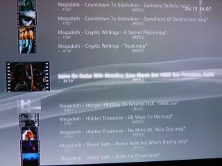
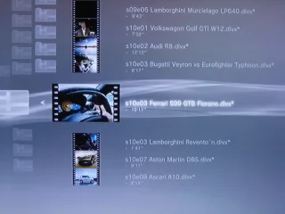
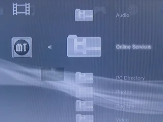
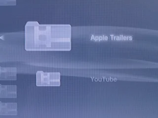
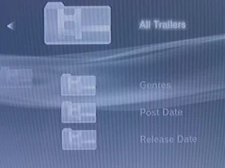
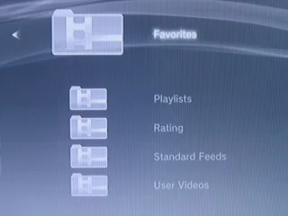
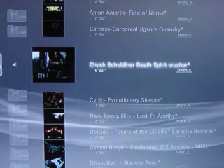
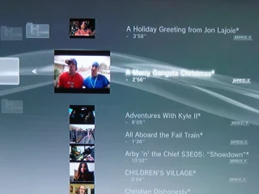

- improved on-the-fly transcoding.
- built-in support for video thumbnails (using ffmpegthumbnailer),
- Apple movie trailers,
- YouTube video feeds
FYI, I'm using Ubuntu 8.04, ffmpeg SVN-r16245 (built from source), ffmpegthumbnailer 1.3.0 (built from source) and x264 0.65.1057 (built from source).
1) Basic configuration
mediatomb only has one config file, located in ~/.mediatomb/config.xml. For more information, please check the mediatomb documentation.
Let's start from the default settings and add a few things.
In the <server> section, set the extended UPnP protocol information for the PS3:
[Updated on 2009/01/02] Reportedly not needed anymore if you're running the latest PS3 firmware (2.53). Try changing it to 'no' if you're experiencing issues with movie playback.
In the <extension-mimetype> section, add a few entries to map common extensions for video files to the appropriate MIME type:
In the <mimetype-contenttype> section, add a few entries to map MIME types to extensions, so that mediatomb can use the proper method to extract metadata:
2) On-the-fly transcoding
The PS3 supports a limited set of audio & video file formats. For example, it can't play FLAC, FLV, Quicktime, etc. In order to play these files anyway, we need mediatomb to transcode them on the fly and then stream them to the PS3 in a format it can play. Transcoding itself is performed by external tools, such as VLC and ffmpeg.
All we have to do is:
- list all MIME types which require transcoding,
- associate each of them to a transcoding profile,
- define the actual transcoding profiles.
- for audio transcoding (OGG and FLAC), a profile based on ffmpeg, which outputs 16-bit PCM stereo audio at 44.1KHz and 192 Kbit/s,
- for video transcoding (ASF, FLV, Quicktime), a profile also based on ffmpeg, which outputs MPEG-2 video at 25 fps and 4Mbit/s, as well as MPEG stereo audio at at 44.1KHz and 192 Kbit/s.
Now, here's the 'mediatomb-video-generic' script. Don't forget to change the path to ffmpeg if needed and to set execute rights ('chmod 755 /usr/local/bin/mediatomb-video-generic'):audio/L16 yes yes 44100 2 yes
DX50
DM4V
M4S2 video/mpeg yes yes yes yes
[this updated script works for Youtube, Apple trailers and mkv files and doesn't require VLC anymore : thanks to the anonymous reader who contributed it].
#!/bin/bashAll right, let's get to the good stuff.
INPUT="$1"
OUTPUT="$2"
VIDEO_CODEC="mpeg2video"
VIDEO_BITRATE="4096k"
AUDIO_CODEC="mp2"
AUDIO_BITRATE="192k"
AUDIO_SAMPLERATE="48000"
AUDIO_CHANNELS="2"
FORMAT="dvd"
exec /usr/local/bin/ffmpeg -threads 2 -i "${INPUT}" -vcodec ${VIDEO_CODEC} -b ${VIDEO_BITRATE} \
-acodec ${AUDIO_CODEC} -ab ${AUDIO_BITRATE} -ar ${AUDIO_SAMPLERATE} -ac ${AUDIO_CHANNELS} \
-f ${FORMAT} - > "${OUTPUT}" 2>/dev/null
3) Video thumbnails
Assuming you have installed ffmpegthumbnailer, enabling on-the-fly thumbnail generation only requires this addition to the <server> section:
Let's save these changes, restart mediatomb and browse some videos: MPEG-2 on the left, DivX on the right. Thumbnails are generated on the fly when videos are browsed.
128
5
yes
no

{kind=link}
{kind=link}
Let's try some different file types.
- Below on the left: VOB files ripped from a DVD. VOB files really are MPEG-2 files, but since they have a different extension, they wouldn't be viewable if we hadn't mapped the .vob extension to the video/mpeg MIME type.
- Below on the right: some MKV (Matroska) samples.
{kind=link}
{kind=link}
This looks much nicer than blank icons :)
4) Apple movie trailers
This feature, found in the Online Services menu, allows you to view movies trailers hosted on an Apple website.
This is very easy to configure. In the <online-content> section, add:
Save the changes, restart mediatomb and...

{kind=link}
{kind=link}
It works like this. First, mediatomb fetches an RSS feed, then it parses it and dynamically creates menus where trailers are sorted by genre, release date, etc. Let's go to action movies and hmmm... 2012? What is this?

{kind=link}
{kind=link}
Wow, the Himalaya overrun by a giant wave, the end of the world, etc. My kind of movie :)
{kind=link}
5) YouTube videos
Now, let's go back to the Online Services and enter the YouTube menu. In the mediatomb configuration file, we need to define:
- a valid YouTube account (username and password),
- the list of video feeds that we'd like to browse.
And in the <;online-content> section, add:
This is quite customizable, but no official documentation is out yet. A quick look at the code will give you some pointers, though ;)
Save the changes, restart mediatomb and now you can browse your YouTube playlists.

{kind=link}
{kind=link}
You can also browse the standard YouTube feeds that you have defined: Most Viewed, Top Rated, etc.

{kind=link}
{kind=link}
All right, that's it for today. Mediatomb is a GREAT project, I can't wait for the official release. In the meantime, there's already plenty to explore.
And by the way, Merry Christmas to all you geeks out there ;)
===================================
As requested, here's my config.xml file. You just change to change YouTube_Username, YouTube_Password, LastFM_Username & LastFM password to your own values.
MediaTomb
uuid:b8b13d59-378e-4cb8-9a87-14f70c70f847
/home/julien/.mediatomb
/usr/local/share/mediatomb/web
mediatomb.db
128
5
yes
no
*
/usr/local/share/mediatomb/js/common.js
/usr/local/share/mediatomb/js/playlists.js
/usr/local/share/mediatomb/js/import.js
/usr/local/share/mediatomb/js/import-dvd.js
audio/L16
yes
yes
44100
2
yes
DX50
DM4V
M4S2
video/mpeg
yes
yes
yes
yes
LastFM_Username
LastFM_Password